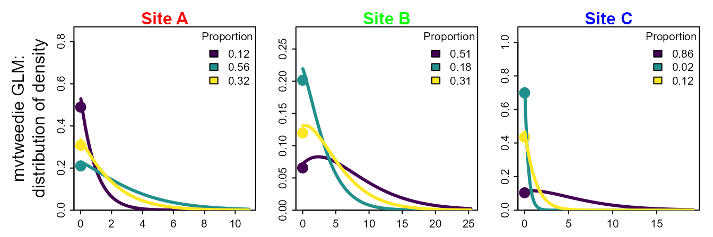

Introduction to mvtweedie
James T. Thorson
Introduction.RmdIntroducing the mvtweedie distribution for regression-based analysis of stomach contents
mvtweedie is n R package to interpret a Tweedie
generalized linear model (GLM) or generalized additive model (GAM)
involving multiple classes as an estimate of proportions for each class,
implicitly involving a multivariate-logit transformation for parameters
and predictions. This approach generalizes the Poisson-to-multinomial
transformation to allow for non-integer responses, and can analyze
either pre-processed (transformed to proportions) or raw (zero-inflated
positive real values) data.
This approach is helpful, e.g., when analyzing diet samples that are heavily zero inflated without pre-processing the samples prior to analysis. In these cases, the Tweedie distribution can be interpreted mechanistically as a thinned and double-marked Poisson point process representing foraging processes.
Example application for tuften puffins on Middleton Island
To apply this method, we first format our data as a long-form data frame, which includes a row for each combination of prey and sample, and columns for prey group and sample ID, the measured quantity in that diet sample for each prey, and any predictor and/or offset variables.
# load data set
data( Middleton_Island_TUPU, package="mvtweedie" )
Middleton_Island_TUPU$Year = as.numeric(as.character( Middleton_Island_TUPU$Year_factor ))
# Illustrate format
knitr::kable( head(Middleton_Island_TUPU), digits=1, row.names=FALSE)| Year_factor | Response | group | SampleID | Year |
|---|---|---|---|---|
| 1978 | 8.1 | Pacific sand lance | Middleton-TUPU-1978-1 | 1978 |
| 1978 | 1.4 | Pacific sand lance | Middleton-TUPU-1978-10 | 1978 |
| 1978 | 17.7 | Pacific sand lance | Middleton-TUPU-1978-11 | 1978 |
| 1978 | 1.0 | Pacific sand lance | Middleton-TUPU-1978-12 | 1978 |
| 1978 | 2.0 | Pacific sand lance | Middleton-TUPU-1978-13 | 1978 |
| 1978 | 2.2 | Pacific sand lance | Middleton-TUPU-1978-14 | 1978 |
We then fit a log-linked regression model for the prey samples, with multiple responses for each sample. In this case, we use mgcv to fit a Generalized Additive Model (GAM) and specifically include:
- a smoothing term
s(Year)that is shared among prey groups, representing variation over time in the expected prey biomass in each stomach; - a smoothing term
s(Year,by=group)that differs among prey groups, representing prey switching over time; - a group-specific intercept
0 + groupthat represents expected differences in prey proportion over time
The first term is essentially a “detectability” covariate, representing changes in attack and capture rates over time. It could be replaced by a fixed or random effect for each sample, although such a model is slow using mgcv. It has a equal effect for predicted measurements for each prey category (due to us using a log-linked model), and therefore “drops out” when predicting prey proportions. Alternatively, we could pre-process the data such that each sample has a constant mean prey density. This will be (rougly) similar to marginalizing across the unmodeled variation in total prey measurement for each sample.
# Run Tweedie GLM
library(mgcv)
gam0 = gam( formula = Response ~ 0 + group + s(Year,by=group) + s(Year),
data = Middleton_Island_TUPU,
family = tw )
# Load class to enable predict.mvtweedie
mygam = gam0
class(mygam) = c( "mvtweedie", class(mygam) )The fitted GAM gam0 does not include any covariance in
the response for each prey species (conditional upon the estimated
response to terms that are included in the formula).
However, predict(mygam) will now predict the response as
proportions across modeled categories, and does include a negative
covariance among categories.
Visualizing covariate responses
After fitting the model, we can visualize the predicted proportion for each prey as a function of covariates.
In this simple example, we can manually construct a predictive grid
for our covariate Year, calculate predictions, and then
plot using ggplot.
# Predict values
newdata = expand.grid( "group" = levels(Middleton_Island_TUPU$group),
"Year" = 1978:2018 )
pred = predict( mygam,
se.fit = TRUE,
origdata = Middleton_Island_TUPU,
newdata = newdata )
newdata = cbind( newdata, fit=pred$fit, se.fit=pred$se.fit )
newdata$lower = newdata$fit - newdata$se.fit
newdata$upper = newdata$fit + newdata$se.fit
# Plot
library(ggplot2)
theme_set(theme_bw())
ggplot(newdata, aes(Year, fit)) +
geom_pointrange(aes(ymin = lower, ymax = upper)) +
facet_wrap(vars(group)) +
scale_color_viridis_c(name = "SST") +
ylim(0,1) +
labs(y="Predicted proportion")
In more complicated models, however, it might be cumbersome to construct a full grid across all covariates. We can instead automate this process using third-party packages. Here, we show how to use pdp to calculate a partial dependence plot:
library(pdp)
# Make function to interface with pdp
pred.fun = function( object, newdata ){
predict( object = object,
origdata = object$model,
category_name = "group",
newdata = newdata )
}
# Calculate partial dependence
# approx = TRUE gives effects for average of other covariates
# approx = FALSE gives each pdp curve
Partial = partial( object = mygam,
pred.var = c( "Year", "group"),
pred.fun = pred.fun,
train = mygam$model,
approx = TRUE )
# Lattice plots as default option
library( lattice )
plotPartial( Partial )
# using in ggplot2
ggplot(data=Partial, aes(x=Year, y=yhat)) + # , group=yhat.id
geom_line( ) +
facet_grid( vars(group) ) +
labs(y="Predicted proportion")
In this simple example, the partial dependence plot and predictive grid both result in the same visualization of effects. However, this is not guarunteed to be the case in models with more covariates.